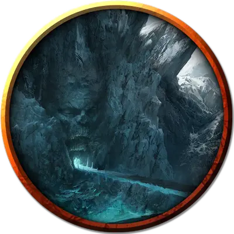

Колыбель каменного отпрыска
Cradle of the Stone Scion
Громадный Элементаль, обычно нейтральный

Класс Доспеха 20 (природный доспех)
Хиты 455 (26к20 + 182)
Скорость 40 футов
| мод | спас | ||
|---|---|---|---|
| СИЛ | 26 | +8 | +8 |
| ЛОВ | 15 | +2 | +2 |
| ТЕЛ | 24 | +7 | +7 |
| мод | спас | ||
|---|---|---|---|
| ИНТ | 11 | +0 | +0 |
| МДР | 18 | +4 | +11 |
| ХАР | 10 | +0 | +7 |
Сопротивление урону огонь, холод, электричество; дробящий, колющий, рубящий от немагических атак
Иммунитет к урону кислота, яд
Иммунитет к состояниям испуг, истощение, окаменение, отравление, очарование, паралич, сбивание с ног
Чувства пассивное Восприятие 14, чувство вибрации 120 футов
Языки Великаний, Первичный
Опасность 23 (50000 опыта)
Бонус мастерства +7
Особенности
Пробуждение отпрыска. Колыбель - это сосуд отпрыска Скорауса [scion of Skoraeus]. Когда хиты колыбели уменьшаются до 0, её остов рассыпается в пыль. Отпрыск мгновенно появляется в том пространстве, которое занимала колыбель, и использует инициативу колыбели.
Легендарное сопротивление (5/день). Если колыбель проваливает спасбросок, она может вместо этого сделать спасбросок успешным.
Сопротивление магии. Колыбель совершает с преимуществом спасброски от заклинаний и прочих магических эффектов.
Осадный монстр. Колыбель наносит двойной урон объектам и сооружениям.
Действия
Мультиатака. Колыбель совершает две атаки Размашистым ударом или Плевком камнем.
Размашистый удар. . Рукопашная атака оружием: + 15 к попаданию, досягаемость 20 футов, одна цель. Попадание: 30 (4к10 + 8) дробящего урона.
Плевок камнем. . Дальнобойная атака оружием: +15 к попаданию, дистанция 120 футов, одна цель. Попадание: 24 (3к10 + 8) дробящего урона, и цель должна преуспеть в спасброске Силы Сл 23, иначе упадёт ничком.
Сокрушительный рёв (перезарядка 5-6). Колыбель издает болезненный протяжный рёв. Каждое существо в пределах 60 футов от колыбели должно совершить спасбросок Телосложения Сл 23. В случае провала существо получает 33 (6к10) урона звуком и становится недееспособным до конца своего следующего хода.
Бонусные действия
Сияющие кристаллы. Колыбель заставляет кристаллы на своём теле вспыхивать светом. Каждое существо в пределах 30 футов от колыбели должно преуспеть в спасброске Телосложения Сл 22, иначе получит 21 (6к6) урона излучением и станет ослеплённым до конца следующего хода колыбели.
Каменные шипы. Колыбель заставляет землю на 20-футовом квадрате, находящейся в пределах 90 футов от себя прорасти кристаллическими шипами до начала своего следующего хода. На это время местность становится труднопроходимой. Если существо перемещает по этой местности оно получает 10 (3к6) колющего урона за каждые пройденные 5 футов.
Описание
Отпрыск Скорауса обычно дремлет глубоко в сердце возвышающейся горы, почти сливаясь с землей. Пока отпрыск спит, горные минералы превращаются в изящные резные камни и блестящие самоцветы.
Если шахтер прокладывает туннель слишком близко к сердцу горы, колыбель просыпается в виде двуногой массы камня и кристаллов. Она обрушивает тяжесть горы на голову нарушителя и издает оглушительный рёв, способный обрушить шахтные туннели.
Если колыбель разрушена, отпрыск Скорауса внутри нее пробуждается. Достигая почти 70 футов в высоту, он возвышается над большинством других существ и использует массу кристаллов в качестве дубинки. Однажды пробудившись, отпрыск продолжает заниматься искусством, которое украшало его сны, стремясь придать камню прекрасную элегантность. Если ему понадобится больше сырья, отпрыск может превратить живое существо на своей ладони в камень.